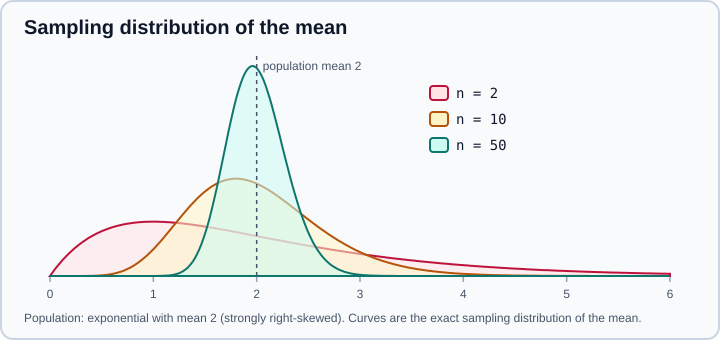

Statistics Fundamentals
|
This content was generated with the assistance of AI and should be verified against the official documentation before being relied on in production. |
Statistics is the discipline that separates what a dataset shows from what it merely happens to contain. Data science leans on it for three jobs: describing a sample, estimating a quantity of a larger population with a stated uncertainty, and deciding whether an observed difference is larger than chance would produce. This page covers the tools for each job and the mistakes that most often turn a correct calculation into a wrong conclusion.
Examples target Python 3.13 or 3.14 and were run on Python 3.13. The page targets NumPy 2.5, pandas 3.1, SciPy 1.18 and statsmodels 0.15, as checked against the official documentation in October 2026. Every code block was executed on those versions and the printed numbers are real; they depend on the seeds shown. The R counterparts are in descriptive statistics and tests, distributions and random numbers and statistical models. Related pages in this section: Exploratory Data Analysis (look before testing) and Model Evaluation & Validation (how the same ideas apply to models).
Which library for what
| Tool | Use it for | Notes |
|---|---|---|
|
Means, medians, quantiles, standard deviation, correlation, simple linear regression and |
Pure Python; fine for scripts, slow for large arrays. |
NumPy |
Fast array summaries and random sampling with |
|
pandas |
Column and group summaries ( |
|
|
Distributions, hypothesis tests, confidence intervals, the bootstrap, permutation tests, effect-size helpers. |
The reference implementation for classical tests. |
statsmodels |
Regression models with full inference tables, power analysis, multiple-testing corrections, time series. |
Formula interface similar to R. |
scikit-learn |
Predictive modelling and its evaluation, not inference. |
See scikit-learn. |
Descriptive statistics
Centre, spread and shape
A numeric sample is summarised by where it is centred, how spread out it is and what shape it has.
| Property | Common measures | Robust alternatives |
|---|---|---|
Centre |
Mean, median, mode |
Trimmed mean, median |
Spread |
Variance, standard deviation, range |
Interquartile range (IQR), median absolute deviation (MAD) |
Shape |
Skewness, kurtosis |
Quantiles, plots |
Association |
Pearson correlation |
Spearman or Kendall rank correlation |
import statistics as st
import numpy as np
from scipy import stats
data = [2.1, 2.4, 2.2, 2.8, 2.5, 9.7, 2.3, 2.6]
print("mean", st.fmean(data), "median", st.median(data), "mode", st.mode([1, 2, 2, 3]))
print("sample sd", round(st.stdev(data), 3), "population sd", round(st.pstdev(data), 3))
print("quantiles", st.quantiles(data, n=4))
print("numpy var ddof=0", round(np.var(data), 3), "ddof=1", round(np.var(data, ddof=1), 3))
print(stats.describe(data))
print("trimmed mean", round(stats.trim_mean(data, 0.125), 3),
"MAD", round(stats.median_abs_deviation(data, scale="normal"), 3))
print(st.correlation([1, 2, 3, 4], [1, 3, 2, 5]), st.correlation([1, 2, 3, 4], [1, 3, 2, 5], method="ranked"))
print(st.linear_regression([1, 2, 3, 4], [2.1, 3.9, 6.2, 7.8]))mean 3.3249999999999997 median 2.45 mode 2
sample sd 2.586 population sd 2.419
quantiles [2.225, 2.45, 2.7499999999999996]
numpy var ddof=0 5.849 ddof=1 6.685
DescribeResult(nobs=np.int64(8), minmax=(np.float64(2.1), np.float64(9.7)), mean=np.float64(3.325), variance=np.float64(6.684999999999998), skewness=np.float64(2.234275298466256), kurtosis=np.float64(3.0578561482901403))
trimmed mean 2.467 MAD 0.297
0.8315218406202999 0.8
LinearRegression(slope=1.94, intercept=0.15000000000000036)One value (9.7) moves the mean from about 2.4 to 3.3, while the median and the trimmed mean barely react, and the scaled MAD (0.297, comparable to a standard deviation for normal data) is about one ninth of the standard deviation (2.586). That contrast is the reason to report robust summaries next to classical ones.
Details that decide whether the numbers are right:
-
Sample versus population variance. The sample formula divides by
n - 1(Bessel’s correction) and estimates a population variance without bias.statistics.variance,stdevandpandas.Series.varuse it;statistics.pvariance,pstdevand NumPy’snp.vardivide byn. Passddof=1to NumPy. The same trap hides behind the default of pandas:Series.var()gives 6.685 on the data above whilenp.var(series)gives 5.849. Always state which one you used. -
statistics.quantilesand NumPy disagree because there are several quantile definitions.statistics.quantilesuses the"exclusive"method by default;np.quantileuses linear interpolation (method="linear"); pandas follows NumPy. Differences are small for large samples and visible for small ones. NumPy’smethod="weibull"matches the"exclusive"method andmethod="linear"matches"inclusive". -
Kurtosis from
scipy.stats.describeis the excess kurtosis (0 for a normal distribution) by default. -
statistics.correlation(Python 3.10) computes Pearson’sr;method="ranked"(Python 3.12) gives Spearman’s rank correlation.linear_regressionreturns the least-squares slope and intercept for one predictor. -
NaN poisons plain NumPy statistics.
np.meanof an array containingNaNisNaN; usenp.nanmeanor a pandas Series, which skips missing values by default.
Probability distributions
A distribution describes how likely each value of a random variable is. scipy.stats provides over a hundred, with the
same interface. A frozen distribution fixes the parameters once.
import numpy as np
from scipy import stats
n = stats.norm(loc=100, scale=15)
print(round(n.cdf(130), 4), round(n.sf(130), 4), round(n.ppf(0.975), 2))
print(round(n.pdf(100), 5))
b = stats.binom(n=20, p=0.3)
print(round(b.pmf(6), 4), round(b.cdf(6), 4), b.mean(), round(b.std(), 3))
print(stats.t.ppf(0.975, df=9).round(3), stats.norm.ppf(0.975).round(3))
rng = np.random.default_rng(7)
print(stats.norm(0, 1).rvs(size=3, random_state=rng).round(3))0.9772 0.0228 129.4
0.0266
0.1916 0.608 6.0 2.049
2.262 1.96
[ 0.001 0.299 -0.274]Source: SciPy statistics tutorial and
scipy.stats. The standard library offers a small equivalent,
statistics.NormalDist, with cdf, inv_cdf and pdf.
The method names are the same for every distribution:
| Method | Meaning |
|---|---|
|
Density of a continuous distribution, or probability of an exact value of a discrete one. |
|
Cumulative probability: the chance of a value at most |
|
Survival function, 1 - cdf, computed accurately in the tail. |
|
Percent point function: the inverse of the cdf, giving a quantile. |
|
Random variates; pass a |
|
Moments and a central interval holding a given probability. |
The distributions that appear most often in practice:
| Distribution | Models | Typical use |
|---|---|---|
Normal |
Sums and averages of many small effects; measurement error. |
Sampling distributions, residuals, many classical tests. |
Student’s t |
A mean estimated with an unknown standard deviation from a small sample. |
Confidence intervals and t-tests; heavier tails than the normal. |
Binomial |
Number of successes in |
Conversion counts, defect counts. |
Poisson |
Count of events in a fixed interval at a constant rate. |
Arrivals, errors, rare events. |
Exponential, Weibull |
Waiting time until an event. |
Durations, reliability. |
Log-normal |
A positive quantity whose logarithm is normal. |
Income, prices, sizes. |
Uniform |
Every value in an interval equally likely. |
Random sampling and simulation. |
Chi-squared, F |
Sums of squared normals; ratios of variances. |
Tests of independence, ANOVA. |
As the sample size grows, t.ppf(0.975, df) approaches the normal 1.96; at 9 degrees of freedom it is 2.262, which is
why small-sample intervals are wider.
Sampling and the central limit theorem
Almost all data is a sample from a larger population (or from a process that could have produced other values). A
statistic such as the sample mean changes from sample to sample, and its distribution across hypothetical repeated
samples is the sampling distribution. Its standard deviation is the standard error. For a mean it is
sigma / sqrt(n), estimated by s / sqrt(n).
The central limit theorem says that, for most populations with a finite variance, the sampling distribution of the mean becomes approximately normal as the sample size grows, whatever the shape of the population. That is why the normal and t distributions work for means even when the data are skewed, and why the approximation needs more data the more skewed the population is.
import numpy as np
from scipy import stats
rng = np.random.default_rng(1)
pop = rng.exponential(scale=2.0, size=100_000) # right-skewed population
print("population skew", round(stats.skew(pop), 2), "mean", round(pop.mean(), 3))
for n in (2, 10, 50, 500):
means = rng.choice(pop, size=(5000, n)).mean(axis=1)
print(f"n={n:<4} mean of means={means.mean():.3f} sd={means.std(ddof=1):.3f}"
f" theory={pop.std()/np.sqrt(n):.3f} skew={stats.skew(means):.2f}")population skew 1.99 mean 1.992
n=2 mean of means=1.983 sd=1.392 theory=1.402 skew=1.31
n=10 mean of means=1.978 sd=0.617 theory=0.627 skew=0.66
n=50 mean of means=1.993 sd=0.283 theory=0.280 skew=0.32
n=500 mean of means=1.994 sd=0.089 theory=0.089 skew=0.07
Source: scipy.stats.skew and the NIST quantitative techniques.
Two things to take from the table. The spread of the mean shrinks like 1 / sqrt(n): quadrupling the sample halves the
uncertainty, so precision gets progressively more expensive. And skewness fades slowly: for this exponential population
n = 50 is still visibly skewed (0.32), while at n = 500 the sampling distribution is symmetric.
The theorem concerns independent samples. Clustered data (many rows per customer), time series and spatially related
rows break the 1 / sqrt(n) rule because rows are not independent; the effective sample size is smaller than the row
count.
Confidence intervals
A 95 percent confidence interval is produced by a procedure that, over many repeated samples, captures the true parameter in 95 percent of them. It is not a statement that the true value lies in this particular interval with probability 0.95, and it is not the range that holds 95 percent of the data (that is a prediction or tolerance interval).
The t interval for a mean
import numpy as np
from scipy import stats
rng = np.random.default_rng(3)
sample = rng.normal(loc=50, scale=10, size=25)
m, se = sample.mean(), stats.sem(sample)
print(round(m, 2), round(se, 2))
print("t interval ", np.round(stats.t.interval(0.95, df=len(sample) - 1, loc=m, scale=se), 2))Source: scipy.stats.t and scipy.stats.sem.
which prints a mean of 49.51, a standard error of 2.36 and the interval [44.64 54.39]. The interval is
mean +/- t * se with the t quantile for n - 1 degrees of freedom. A simulation shows what "95 percent" means: drawing
2,000 fresh samples from the same population and building the interval each time, 95.35 percent of the intervals contained
the true mean 50 (the exact figure depends on the seed and approaches 95 as the number of repetitions grows).
The bootstrap
When a statistic has no simple formula (a median, a ratio, a percentile, a model score) or the distribution is far from
normal, resample the data with replacement many times and read the interval from the resulting distribution.
scipy.stats.bootstrap does it with several interval methods.
res = stats.bootstrap((sample,), np.mean, confidence_level=0.95,
n_resamples=9999, method="BCa", random_state=rng)
print("bootstrap ", np.round([res.confidence_interval.low, res.confidence_interval.high], 2),
round(res.standard_error, 2))
res_med = stats.bootstrap((sample,), np.median, random_state=rng)
print("median CI ", np.round([res_med.confidence_interval.low, res_med.confidence_interval.high], 2))bootstrap [45.32 54.6 ] 2.34
median CI [45.47 52.26]Source: scipy.stats.bootstrap.
The bootstrap interval for the mean (45.32 to 54.60) is close to the t interval, and the bootstrap standard error (2.34)
matches the analytic 2.36. The method is "BCa" (bias-corrected and accelerated) by default, with "percentile" and
"basic" available. It works on the data you have, so it cannot repair a biased or tiny sample: with 25 observations the
bootstrap interval for an extreme quantile is unreliable, and with dependent data (time series, clusters) you must
resample blocks or clusters, not rows. Pass paired=True for paired data and several samples as a tuple for statistics
of more than one group.
Hypothesis tests
A test asks whether the data are surprising under a null hypothesis H0, usually "no difference" or "no effect".
-
State
H0and the alternative (two-sided unless there is a prior reason for one side), and choose the significance levelalpha(commonly 0.05) before looking at results. -
Compute a test statistic and its distribution under
H0. -
The p-value is the probability, if
H0were true, of a statistic at least as extreme as the observed one. -
If
p < alpha, call the result statistically significant. Otherwise the data do not distinguish the hypotheses.
The p-value is not the probability that H0 is true, not the probability that the result happened by chance, and not a
measure of how large or important an effect is. A large sample makes tiny differences "significant", and a small sample
makes large ones "not significant". Failing to reject H0 is not evidence that it holds.
Choosing a test
import numpy as np
from scipy import stats
rng = np.random.default_rng(11)
a = rng.normal(100, 15, 40)
b = rng.normal(108, 15, 45)
t = stats.ttest_ind(a, b, equal_var=False)
print("Welch", round(t.statistic, 3), round(t.pvalue, 4), "df", round(t.df, 1))
print("CI of difference", np.round(t.confidence_interval(0.95), 2))
d = (b.mean() - a.mean()) / np.sqrt(((len(a) - 1) * a.var(ddof=1)
+ (len(b) - 1) * b.var(ddof=1)) / (len(a) + len(b) - 2))
print("Cohen d", round(d, 2))
u = stats.mannwhitneyu(a, b, alternative="two-sided")
print("Mann-Whitney", u.statistic, round(u.pvalue, 4))
print("Shapiro a", round(stats.shapiro(a).pvalue, 3))
table = np.array([[30, 70], [45, 55]])
chi = stats.chi2_contingency(table)
print("chi2", round(chi.statistic, 3), round(chi.pvalue, 4), "dof", chi.dof)
print("Fisher", round(stats.fisher_exact(table).pvalue, 4))
perm = stats.permutation_test((a, b), lambda x, y: np.mean(y) - np.mean(x),
n_resamples=9999, random_state=rng)
print("permutation p", round(perm.pvalue, 4))
print("anova", round(stats.f_oneway(a, b, rng.normal(104, 15, 40)).pvalue, 4))Welch -3.848 0.0002 df 82.7
CI of difference [-16.77 -5.34]
Cohen d 0.83
Mann-Whitney 496.0 0.0004
Shapiro a 0.674
chi2 4.181 0.0409 dof 1
Fisher 0.0405
permutation p 0.0004
anova 0.0004Source: ttest_ind, mannwhitneyu, shapiro, chi2_contingency, fisher_exact, permutation_test and f_oneway.
Reading the output: the groups differ with p = 0.0002, and the 95 percent interval for the difference of means (a minus b) is -16.77 to -5.34, so group b is higher by roughly 5 to 17 units. The effect size (Cohen’s d = 0.83) is large by conventional labels. The rank-based, permutation and ANOVA results agree, which is reassuring.
Practical points about the tests:
-
ttest_indassumes equal variances by default (equal_var=True, Student’s test). Passequal_var=Falsefor Welch’s test, which does not require equal variances, loses little when they are equal and is the safer default. -
Normality tests are rarely the right gate.
shapirois informative for small samples but rejects trivial departures in large ones. The t-test is robust to moderate non-normality for moderate samples through the central limit theorem; inspect a Q-Q plot instead of automating a decision on a p-value. -
The test must match the design. Paired data (the same customers before and after) need a paired test; independent tests on paired data discard information, and a paired test on independent data is invalid. Repeated measures on the same units are not independent observations.
-
Chi-squared needs adequate expected counts (a common rule is at least 5 per cell);
fisher_exacthandles small 2x2 tables exactly.chi2_contingencyapplies a continuity correction to 2x2 tables by default. -
One-sided tests (
alternative="greater"or"less") must be chosen before seeing the data, because they halve the p-value. -
Permutation tests and the bootstrap make few assumptions and work for any statistic, at the cost of computing time.
-
A single proportion is tested with
stats.binomtest(k, n, p), which also returns an exact interval throughproportion_ci(). For 62 successes in 100 trials against p = 0.5 it gives a p-value of 0.021 and the interval 0.517 to 0.715. The old functionscipy.stats.binom_testwas removed in SciPy 1.12.
Effect size, power and sample size
A p-value says whether an effect is distinguishable from noise; an effect size says how big it is. Report both. Common
choices are the difference in means in original units (best for communication), Cohen’s d (difference in standard
deviations), a correlation coefficient or r^2, and for binary outcomes the difference or ratio of proportions and the odds
ratio. Always give an interval for the effect.
Statistical power is the probability that a test detects a real effect of a given size. Low power produces both missed effects and, among the effects that do reach significance, exaggerated estimates. Compute the required sample size before collecting data:
from statsmodels.stats.power import TTestIndPower
n = TTestIndPower().solve_power(effect_size=0.5, alpha=0.05, power=0.8)
print("n per group for d=0.5, power 0.8:", round(n, 1))This prints 63.8, so about 64 observations per group are needed to detect a medium effect (d = 0.5) with 80 percent power
at the 5 percent level. Detecting half that effect needs roughly four times as many. Source:
statsmodels TTestIndPower.
Multiple testing
Each test at alpha = 0.05 has a 5 percent chance of a false positive when there is no effect. Run twenty independent
tests and the chance of at least one false positive is 1 - 0.95^20, about 64 percent. This arises in exploratory work, in
testing many features, in comparing many groups and in A/B tests with many metrics. Two error rates are in use: the
family-wise error rate (any false positive) and the false discovery rate, FDR (the expected share of false positives
among the discoveries).
import numpy as np
from scipy import stats
from statsmodels.stats.multitest import multipletests
rng = np.random.default_rng(5)
pvals = np.array([stats.ttest_ind(rng.normal(0, 1, 30), rng.normal(0, 1, 30)).pvalue
for _ in range(20)])
pvals[:2] = [0.0004, 0.003] # two real effects
print("raw < 0.05:", int((pvals < 0.05).sum()))
print("Bonferroni:", int(multipletests(pvals, method="bonferroni")[0].sum()))
print("Holm :", int(multipletests(pvals, method="holm")[0].sum()))
print("BH (FDR) :", int((stats.false_discovery_control(pvals) < 0.05).sum()))raw < 0.05: 2
Bonferroni: 1
Holm : 1
BH (FDR) : 2Bonferroni (divide alpha by the number of tests) and Holm (a uniformly less conservative step-down version) control
the family-wise error rate; the second planted effect (p = 0.003) was lost by both. The Benjamini-Hochberg procedure
controls the false discovery rate and kept both. Use FWER control when a single false positive is costly (a clinical
claim) and FDR control for screening many hypotheses. The corrections only work for the tests you counted: the forking
paths of an exploration are difficult to count, so treat exploratory results as hypotheses and confirm them on new data.
Regression for inference
When the goal is to explain and quantify rather than predict, fit a model with a full inference table. The formula interface of statsmodels mirrors R.
import numpy as np
import pandas as pd
import statsmodels.formula.api as smf
rng = np.random.default_rng(2)
df = pd.DataFrame({"x": rng.normal(size=100)})
df["y"] = 1.5 + 2.0 * df["x"] + rng.normal(scale=1.0, size=100)
fit = smf.ols("y ~ x", data=df).fit()
print(fit.params.round(3).to_dict())
print(fit.conf_int().round(3).values.tolist())
print(round(fit.rsquared, 3), round(fit.pvalues["x"], 6)){'Intercept': 1.494, 'x': 2.11}
[[1.3, 1.688], [1.906, 2.314]]
0.811 0.0Source: statsmodels, Linear regression. fit.summary() prints the full
table. The data were generated with intercept 1.5 and slope 2.0, and both lie inside their intervals. Checking the
residuals (a Q-Q plot, residuals against fitted values) is part of the analysis, not an optional extra. Regression
coefficients describe association; they carry a causal meaning only under a causal design or strong assumptions about
confounders (see Exploratory Data Analysis). For prediction, scikit-learn’s
linear models and the evaluation methods in
Model Evaluation & Validation apply instead.
Common mistakes
-
Treating p < 0.05 as truth. It is a threshold on a statistic. Report the effect, its interval and the sample size.
-
p-hacking. Trying transformations, subsets and tests until one is significant. Decide the analysis in advance, or count and correct for what was tried.
-
Ignoring the unit of analysis. Ten thousand rows from fifty customers are not ten thousand independent observations. Aggregate or use models that account for clustering.
-
Confusing statistical and practical significance. A tiny effect in a huge sample can be significant and worthless.
-
Stopping an experiment when it looks good. Repeatedly checking and stopping at the first significant result inflates false positives; fix the sample size or use a sequential design.
-
Reading non-significance as equivalence. "No significant difference" is not "the same". Report the interval and what differences it excludes.
-
Using the sample variance formula for a population, or the reverse. State
ddof. -
Dropping missing values without asking why. See Data Cleaning & Preparation.
-
Applying a test after peeking at the data to choose the hypothesis. The hypothesis must come before the data used to test it.
Where older tutorials and books are outdated
| Older pattern | Current practice |
|---|---|
|
|
|
Removed in SciPy 1.12; use |
Computing a bootstrap by hand with loops |
|
Manual p-value adjustment |
|
Reporting only the p-value of |
Use the result’s |
|
Removed in pandas 2.0; use |
|
The formula interface |
Python 2 era |
Not needed; |
References
-
Python, statistics module
-
SciPy, scipy.stats reference and the statistics tutorial
-
SciPy, bootstrap, ttest_ind, permutation_test, false_discovery_control
-
statsmodels, Statistics, Regression and power analysis
-
NIST/SEMATECH e-Handbook of Statistical Methods, handbook home
-
Benjamini and Hochberg, "Controlling the False Discovery Rate", Journal of the Royal Statistical Society B 57(1), 1995
-
American Statistical Association, "The ASA Statement on p-Values: Context, Process, and Purpose", The American Statistician 70(2), 2016